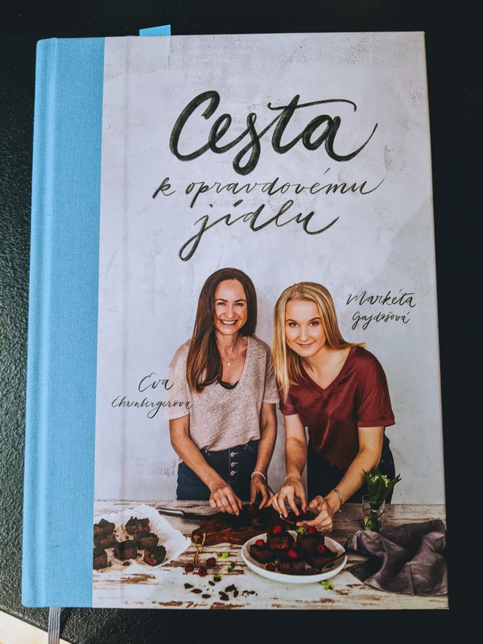
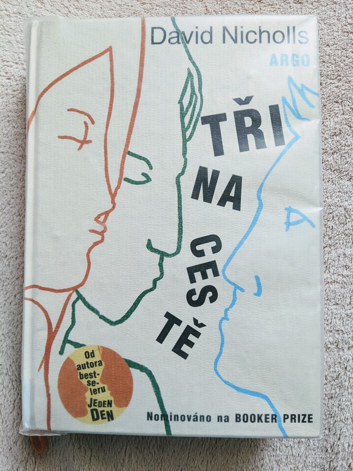
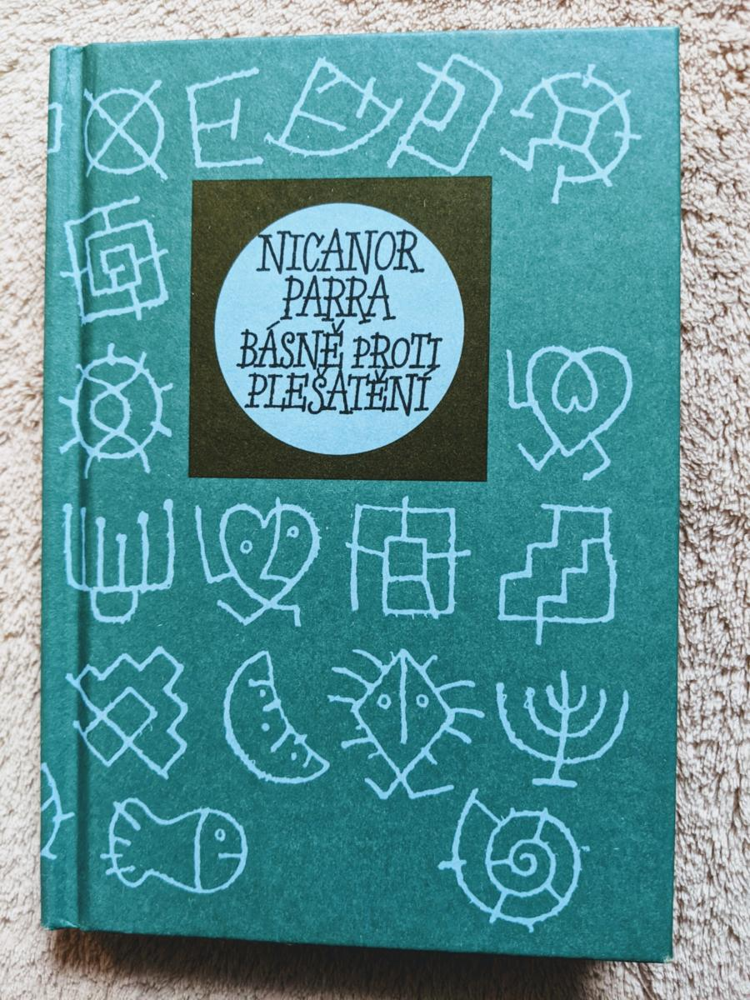

Člověk by řekl, že přes zimu, kdy se povětšinou sedí doma za pecí, toho člověk přečte nejvíc, ale opak je pravdou. Tak snad to přes jaro v lockdownu trochu doženu 8-)
Eva Ehrenbergerová, Markéta Gajdošová - Cesta k opravdovému jídlu
Po dlouhé době jsem si přála k Vánocům kuchařku. Cesta k opravdovému jídlu, hit sociálních sítí, přináší jak poctivou porci receptů, tak trochu té základní teorie z pera výživové poradkyně. Co se týče té teoretické stránky, určitě zde najdete řadu užitečných základních informací, které se vám budou hodit, pokud si chcete začít více hlídat svůj kalorický příjem. Seznámíte se se stručnou charakteristikou jednotlivých živin, kdy a jaké doplňky stravy má smysl tělu dodávat či jak číst etikety výrobků v obchodech. Občas sice kniha sklouzává k takovému tomu nicneříkajícímu stokrát omílanému klišé, že vše je strašně individuální a nakonec je stejně vždy nejlepší vyhledat výživového poradce osobně a nechat si sestavit jídelníček na míru, což je jistě svatá pravda, ale kvůli tomu si tuhle knihu přece nikdo nekupuje 8-) O to nadšeněji jsem se ovšem vrhla na zkoušení receptů, které jsou naopak velmi konkrétní, často se v nich opakují ingredience a celkově mi na první pohled přišly poměrně rychlé k uvaření. Největší ohlas u nás zatím sklidil banánový chlebíček, ten je prostě famózní! Celkem nám i chutnaly cottage bulky (pro mě úspěch už to, že jsem upekla konečně nějaké pečivo, které se dá jíst :D), candát s batátovým pyré nebo cizrnové kari. Naopak propadákem se staly noční jahodové vločky a zpropagované malinové brownies mě tedy taky absolutně nenadchlo. Co naopak velmi kvituji je celá série receptů do krabičky, takže konec výmluv, že na zdravé stravování není prostor :-) Suma sumárum jsem od knihy kvůli tomu obrovskému hypu zřejmě čekala trošičku víc, ale už teď jsem si jistá, že tohle nebude ta kuchařka, na kterou by nám doma sedal prach :-)

David Nicholls - Tři na cestě
Pro knížky Davida Nichollse já mám slabost a ani tato pro mě nebyla zklamáním. Příběh jednoho stárnoucího manželského páru v krizi a složitého vztahu otce se synem byl hlubokým, ale zároveň i humorným čtením. Navíc ve mně nevyvolal pocit, že bych jedné z postav chtěla “nadržovat” - chvíli jsem se přikláněla tu na stranu Connie, tu na stranu Douglase, nicméně pro oba jsem měla svým způsobem pochopení a netroufla bych si vynést soud, kdo z nich k jejich manželské krizi přispěl větším dílem. David Nicholls má nesmírný talent vykreslit i náročné životní situace tak, že to čtenáře neuvrhne do deprese, a tak myslím, že s touto knihou rozhodně nešlápnete vedle, ať už máte jakékoliv literární preference.

Nicanor Parra - Básně proti plešatění
Poezie tady už dlouho nebyla, co 8-) Menší čistka v mé kroměřížské knihovničce odhalila pár dávno zapomenutých pokladů - mezi nimi i tuto sbírku chilského básníka Nicanora Parry, kterou jsem kdysi dostala od Moniky. Jedná se o poměrně přímočarou, místy humornou poezii, která by se mohla líbit i těm, kteří jinak veršům příliš neholdují.
Poezie musí být
dívka uprostřed klasů
nebo nebýt vůbec nic.
